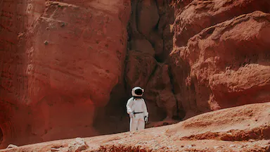
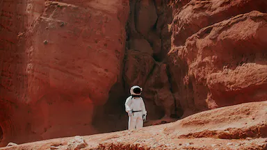

Software designer, founder, and amateur astronaut.
I’m Spencer, a software designer and entrepreneur based in New York City. I’m the
founder and CEO of Planetaria, where we develop technologies that empower regular people to explore space on
their own terms.


 
